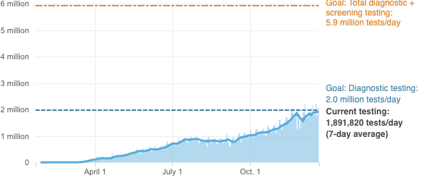

<%= await t.include("./lib/_header.html", { "slug": slug, "config": config, "id": "us" }) %>
<% if (COPY.labels.headline_us) { %>
<%= t.smarty(COPY.labels.headline_us) %>
<% } %>
<% if (COPY.labels.subhed_us) { %>
<%= t.smarty(COPY.labels.subhed_us) %>
<% } %>
aria-label="<%- COPY.labels.screenreader %>"
<% } %>
>

<% if (COPY.labels.footnote_us) { %>
<% } %>
<%= await t.include("./lib/_foot.html") %>